Fire Call Win
Fire Call Win is a simple chat tool that allows two users, typically developers, to communicate person-to-person using encrypted transfer via shared files and folders. Files can be transferred and exchanged, chat and data swapped on almost real-time basis. This version uses the basic Dropbox service to share files and folders but it can also use any shared file or folder resource over a network of some sort as long as it appears as a locally accessible resource to Windows. In addition to chat, Emojis, voice recordings and user files can be shared too.This program is free and FOSS. The basic file and folder sharing services are free, this program uses Dropbox out of the box but Google Drive and Microsoft's Onedrive all provide basic file and folder sharing facilities for free.

Fig. 01 FireCall for Windows Main User Interface
Developed in VB6, it is a 32bit program (all hail 32bits!) that allows chat to take place between both Windows and Mac OS/X users using DropBox as the interchange medium. In addition to the VB6 version there is also a version that uses javascript on Mac OS/X. They use the same methodology to successfully communicate with each other on multiple o/s. The javascript version works on Windows as well so you are spolit for choice as to which you can use! This help file describes the Windows version only.
Minimum configuration: From Windows XP to current Windows versions. Any version of Windows 32/64bit from XP upward that have the VB6 runtime. All versions of Windows have the VB6 runtime pre-installed so FCW works on any Windows PC. Tested on Windows XP, Win 7 and 10. Should also be tested on Win11 shortly.
Please be aware that this program requires the standard display configuration of 96 DPI or 100% scaling. It has not been designed to operate on higher magnifications or increased DPI.
Program Configuration.
When the program first runs it needs to have some configuration options filled in. Fire Call Win will prompt you to set the location for the input and output files and the location of the exchange folder. The preferences screen will automatically run to allow you to set these.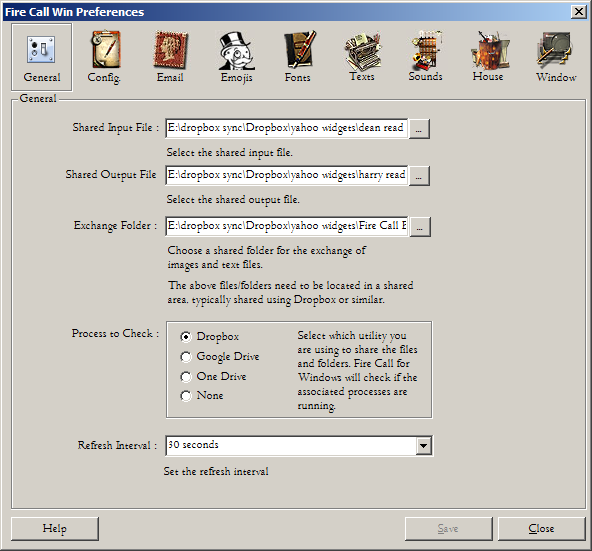
Fig. 02 The Preferences General Tab in full.
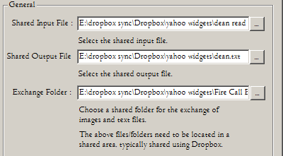
Fig. 03 A Portion of the Preferences General Tab, Input and Output File Fields Highlighted
Enter the location of the input and output files you will be using to communicate with your partner in the fields above.
Suggested names : inputFile.txt and outputFile.txt.
Fire Call Win has two shared files, one is the input file from which you will receive updates from your partner. The other is the outputfile where your own updates will be written and sent to your partner. The location where you store these files must be on a shared network drive so you can both see them.
Exchange Folder:
The third essential setting is the exchange folder. This is the location that Fire Call Win will use to store files that are shared between two chat partners. This folder must be created, located in a shared network location and then entered into Fire Call Win's configuration. This will enable drag and drop and thus allow the sharing of files between you.Dropbox File and Folder Sharing
If you are not using Dropbox then skip this section.The location where you store these files must be shared within Dropbox so you can both see them. Visit dropbox for more detailed instructions on how to share a folder with another user. You do need some basic familiarity with sharing files using dropbox, how to share files and folders and how to create files in a shared area. If you have that knowledge then proceed, if not, then go and watch a youtube tutorial!
Basically the method is this: Open dropbox using its web interface (you must have an account and be logged in) and look for the "shared" menu option. At that point there will be a button to create a shared folder, you simply specify the name and who you want to share it with. That person clearly must have a dropbox account too. Once the Dropbox sharing is resolved Fire Call Win will be able to use it as the communications medium to your partner.
Next, you must create two files and share them with your partner as described above - and once done you need to enter their location into Fire Call Win. The dropbox folder is the location where all your dropbox files are synched. The two files required are simple text files. Create them yourself manually in the dropbox folder.
That's it! A lot more simple in reality than it sounds.
If you open the program interface of DropBox and select Preferences, you will see this screen. Dropbox makes a copy of all your shared folders and locates this in the folder specified above. This is where you will place your files.
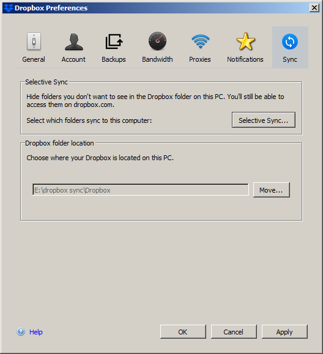
Fig. 04 The Dropbox Synch. Location
Google Drive File and Folder Sharing
If you are not using Google Drive then skip this section.This section will briefly describe how to set up a shared folder using Google Drive.
Onedrive File and Folder Sharing
If you are not using Onedrive then skip this section.This section will briefly describe how to set up a shared folder using Apple's Onedrive.
Fig. 05 FireCall for Windows Main User Interface
Program Operation
When the basic configuration tasks are done, FCW will start and show a screen similar to the one above but with no chat text in the two chat windows. The chat boxes are empty as you have not yet started to chat. If you hover your mouse over any component a tooltip will pop up briefly stating what the component does.Upper Chat Window
The top chat contains your chat partner's texts and messages. This is known as the input box displaying the contents of the shared input file.
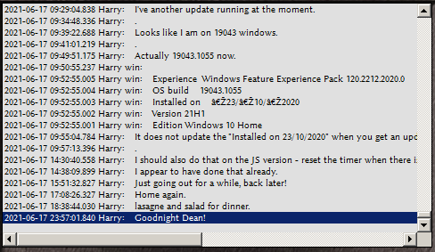
Fig. 06 Example Partner's Chat Window.
Lower Chat Window
The bottom chat contains your own texts and messages. This is the output box displaying the contents of the shared output file. Beneath your chat box is the text box where you type your messages, pressing the SEND button to dispatch the text.
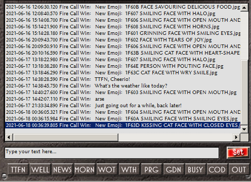
Fig. 07 Your chat window showing chat and user-defined buttons.
Chat Window Right Clicking
If you right click on either of the chat windows you will be presented with a pop up window that is dedicated to the chat box.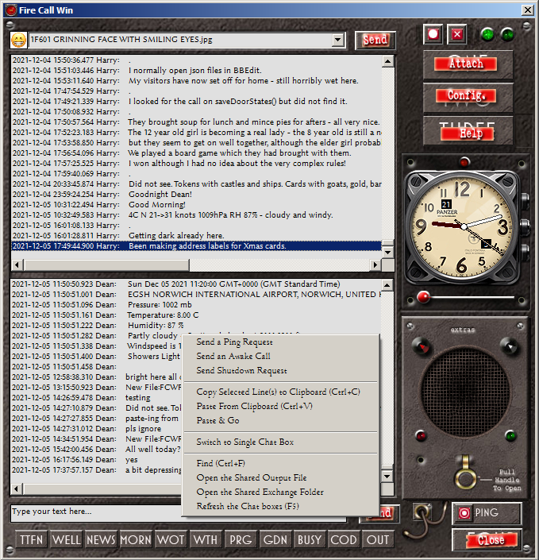
Fig. 08 The Right Click Menu as shown on the Chat Windows.
Send a Ping Request
Causes a 'ping' to be sent to the other user. This will elicit a ping response from your chat partner's client app as long as it is running.Send an Awake Call
Causes an awake request to be sent to the other user's application, that should elicit an awake response shortly after.Send Shutdown Request
Causes a shutdown request to be sent to the other user's application, that should elicit an shutdown response shortly after. If automatic shutdown is enabled on the remote copy of FireCall, then it will close the application at the other user's end. You might do this whilts performing housekeeping and archiving tasks.Copy Selected Line(s) to Clipboard
This will allow you to copy any selected lines within the chosen chat box. You can then paste that text into any other application.Copy and Quote Line
This option will take the currently selected line in your partner's chat and will immediately post it into your own chat area with [quote] and [/quote] tags either side of it, allowing you to then respond to a specific comment.Paste from Clipboard
This pastes any currently copied text that sits in the clipboard onto the text area below. You can then edit it or press Send to transmit it immediately.Paste & Go
This pastes any currently copied text that sits in the clipboard onto the text area below, it then transmits it immediately.Switch to Single Chat Box
FireCall operates in two modes, single chat box or split chat box. Use this option to switch between the two.Find (Ctrl+F)
This option allows you to search for specific text within the selected chat box. The Ctrl+F key is designated to initiate a search at any time. First of all click upon the chat box that you want to select as the source. Then press Ctrl+F and a dialog box will appear where you can type in your search string. Press F3 for subsequent searches for the same string.
Open shared input or output files
The option to open shared input or output files will open the files specified in the default application, this will probably be notepad on most systems.Open shared exchange folder
The option to open the shared exchange folder will open the File Explorer at your specified location.Refresh the chat boxes (F5)
The option to refresh the chat boxes will cause the program to repoll for fresh data immediately and make the two windows refresh. A press on F5 will also accomplish the same.Pre-Defined Text Buttons
Beneath the text box are some buttons allowing preset messages to be dispatched. Each will send a random selection, initially from three sets of message texts, each with roughly the same meaning. You can add your own custom texts in the preferences 'Texts' tab.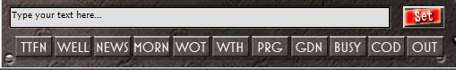
Fig. 09 Text Box and Pre-Defined Text Buttons
TTFN - A pre-defined button that you may use to send a Goodbye message, each button has several random texts associated with each.
WELL - Use this button to send an inquiry as to health.
NEWS - Use this button to send an inquiry as to the general news.
MORN - Use this button to send a "Good morning".
WOT - Use this button to send an inquiry as to what is happening.
WTH - Use this button to send an inquiry as to the weather
PRG - Use this button to send a statement as to how busy you currently are programming!
GDN - Use this button to send an statement as to how busy you are with your gardening tasks!
BUSY - Use this button to send an statement as to how busy you are in general
COD - Use this button to send an statement as to how busy you are coding...
OUT - Use this button to send an statement as to your impending absence.
You can define your own texts in the preferences and you can even change the button labels as you can change the VB6 source at any time. I will drop a PSD into the package to allow you to create your own button cap designs that you can replace in the VB6 project.
If you right click when hovering your mouse over any of these buttons, a menu will appear listing all the defined messages allowing you to choose which specific message to send, avoiding the randomness altogether.Emoji selection
At the top of the input box is the Emoji selection Drop Down. Select an Emoji and press SEND. This will send the emoji to your chat partner and open the Emoji panel, bottom right so that you can see your current Emoji state.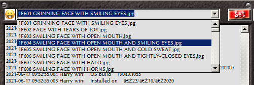
Fig. 10 Emoji Selection Drop Down
Polling and Data Update Lamps
Two lamps exist at the top of the window, they have two states, OFF and LIT .
When the right lamp is lit continuously it means that you have an
update from your chat partner in chat. The left hand lamp will
regularly
glow for 5 seconds to indicate that the tool is successfully polling
the shared data area. It does this according to an interval set in the
preferences. If Fire Call Win ever fails to obtain the data from the
shared location an error message will pop up telling you of the problem.
.
When the right lamp is lit continuously it means that you have an
update from your chat partner in chat. The left hand lamp will
regularly
glow for 5 seconds to indicate that the tool is successfully polling
the shared data area. It does this according to an interval set in the
preferences. If Fire Call Win ever fails to obtain the data from the
shared location an error message will pop up telling you of the problem.Fig. 11 Polling and Data Update Lamps
The polling lamp also has another function, you may double-click on it to refresh both chat windows, this will also initiate a poll of the input file.
The Attach Button
This allows you to select a single file to send to your chat partner. This will open a file selection box. Select a file, press OK and it will be sent. It will be copied to the FCW exchange folder. The chat partner will receive a notification.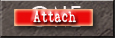
Fig. 12 The Attach Button
In addition to attaching a file via this button you can also Drag and Drop files onto either chat window and your chat partner will receive a notification of the event. The files you drag to the chat window will be copied to the FCW exchange folder. Dropbox will then automatically synch the file so that it is available to your chat partner. The speed of the synchronisation is dependant upon the size of the file you are attaching and the speed of your internet/dropbox settings. It does not matter which window you drag to, the drag will be considered a share to your remote partner. You may only drag single files or a single folder but please understand that dragging an entire folder may have unexpected results due to time taken and space utilisation. Note: Dropbox has a limit on space utilisation so don't drag and drop a large folder.
Help Button
This button will display the help file you are reading now. It will open the browser you have specified as your default browser.
Fig. 13 Help Button
Close Button
This button will close the utility and all associated windows.
Fig. 14 Close Button
It has the same functionality as clicking the 'x' button, top right.
Fig. 15 Close Button
Config Button
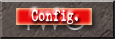Fig. 16 Config Button
The config button opens the Preferences Utility where you can change the program settings.
Note: the program will stop automatically polling for new data whilst the preferences window is open. Close it and automatic polling will restart.
The Preferences Panel
The General Panel contains the most important user-configurable items required for the program to operate correctly. If these items are not filled in then FireCall will not operate at all.Fig. 17 The Preferences Panel Showing General Tab.
The use of the input, output and exchange fields. was covered earlier in the explanation section.
Refresh interval
The refresh interval is the polling time. Setting this to just a few seconds will make the chat feel much more real-time. Extending it just slows down the discussion, which may be preferable when you are busy or if you are not bothered about chat turnaround.The Configuration Panel
The configuration panel is the location for optional configuration items. These items change how FireCall operates, configure them to suit your needs and your mode of operation.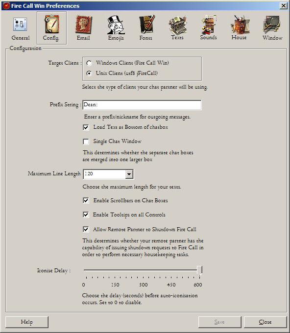
Fig. 18a The Preferences Panel Showing the Configuration Tab.
Target Client
The target client is an option that you may not need to change unless you are communicating with the javascript version of the FireCall app that runs on Mac OS X. That version requires UTF8 support to display and handle unicode characters. If you are a Windows user communicating with FireCall for Windows you do not need to select the UTF8 option. However, the code we use to handle UTF8 files may be faster for reading and writing the input/output data files, so by all means try it out.If you have the ANSI option enabled and your partner sends you Unicode characters then they will appear as in the the chat window shown below, some strange squiggly characters are displayed instead of those sent. This is due to a limitation of ANSI not FCW. To see these characters as they are meant to be displayed simply select UTF8.
Fig. 18b The Chat Window Displaying Unknown Unicode Characters as Squiggles.
Prefix String
The prefix is a string that will precede all your text messages. The window above shows the prefix string set to "Harry".Load at Bottom
The Load at Bottom checkbox determines whether the chat texts are top or bottom-loaded.Single Chat Window
The Single Chat Window will merge the chatboxes to just a single box, this will converge functionality with the Yahoo widget version of Fire Call that has a single chat window by default. The text from both windows is merged, sorted and displayed as one.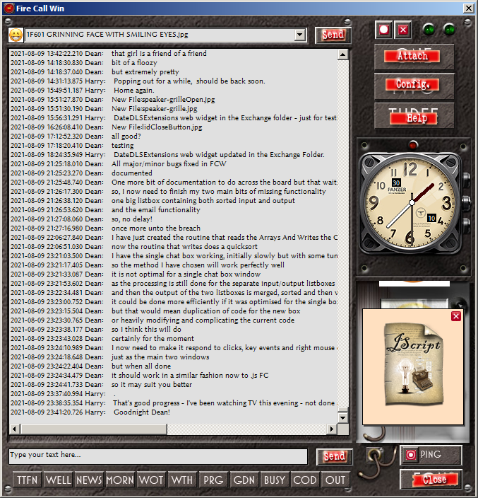
Fig. 19 The Preferences Panel Showing the Single Chat Window Option.
Maximum line length
The Maximum line length option will cause any lines you type in to be cropped when the line length reaches the set limit. The line will then be split into two or more lines. The line length option only affects lines currently being typed in, not older lines already contained within the chat.Note that you can resize the FCW window horizontally so that your longest messages will be readable without too much scrolling. Just grab the far right window border and drag it to the right.
Enable Scrollbars
Enable scrollbars option will enable or disable the vertical and horizontal scrollbars in all chat windows. Scrolling is then achieved by use of the keyboard up and down keys.Enable Tooltips
Enable Tooltips will enable or disable the tooltips on the main application window.Iconise Delay
Iconise delay - this controls the delay after which the application will be iconised or minimised to the desktop. This is not a Windows minimise but an program iconise. After iconisation the program will look exactly like the following icon. You can place the icon wherever you want on the desktop and it will remember the location even after shutdown and restart. The reason for this type of iconisation is to minimise desktop space utilisation and to allow the program to alert you to any incoming text.
Fig. 20 The Program Iconised
The icon image will pulsate when a incoming message has arrived. Double clicking on this icon will cause the main program to re-appear. The data change lamp will be lit
.
To clear this click on the lamp or the text input area, this
tells
the program that you have acknowledged your receipt of new text.Allow Remote Partner to Shutdown this app
This determines whether your remote partner has the capability of issuing shutdown requests to your copy of Fire Call prior to him performing administration or housekeeping tasks such as reducing the size of the text files used to store the chat text. If these tasks are carried out whilst FCW is running it could cause the app some problems. Having the ability to indicate the need for a shutdown to your partner is a useful tool.The Email Panel
The email panel is where you will configure FCW to work with your email client in order to send email messages about the current state of FCW. Some email options are not yet implemented fully so lower your expectations in the respect of this panel.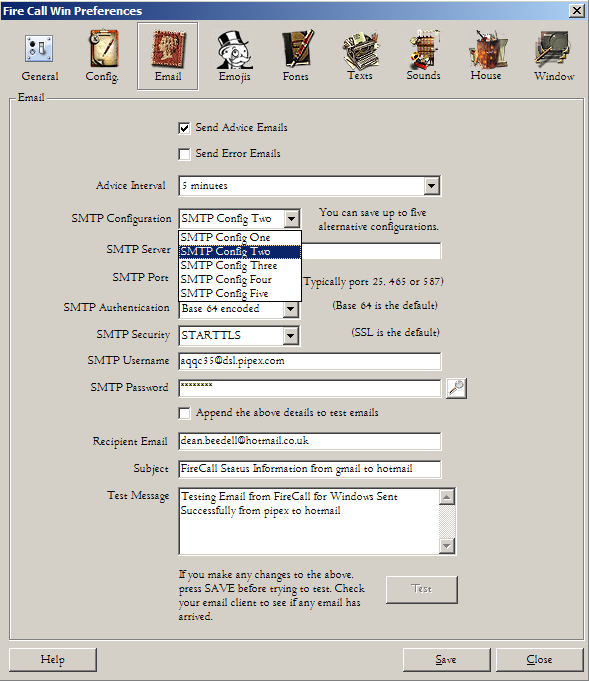
Fig. 21a The Preferences Panel Showing the Email Tab.
Read all the following if you want to configure email!
Before you proceed, please be aware that email is always more complicated than you think. Don't underestimate how difficult it will be for you to configure email correctly (and for the poor developer to have to code an email application in VB6). If you don't need email then we suggest you leave this tab well alone! With that thought in mind, we have greyed out the majority of options on this tab until either one of the two main check box options are marked with a tick.
The email tab allows the user to enter details of their email provider's SMTP settings so that the program can automatically email a chosen recipient. These emails can be sent on the occurrence of two events: firstly, if FireCall experiences or recovers from an error; secondly, it can summarise recent chat activity and email the recipient in the form of a text message containing all the recent chat. For example, if you are on holiday then you might prefer to have your partner's chat contents emailed to you or forwarded to another email address.
When you first attempt to use this functionality, your firewall will create a modal popup requesting that you allow or deny access for this program to the network. You must reply 'YES' to this if you want Firecall to be able to send advisory emails. If you say NO accidentally and want to use this functionality in the future you will have to know how to administer your own system firewall to re-enable FireCall's access to the network. This guide cannot help you with this as all Microsoft and 3rd party firewalls have their own configuration methods...
Send Advice Emails
Ticking this check box will cause regular emails to be sent on the interval specified containing a text record of recent chats.
Advice Interval
Select the interval that any email will be sent. When an email is currently underway you may notice a temporary interruption to the clock and other functions within FCW. The routine is looping through recent messages then using system functions to email that information.The routing runs in an asynchronous timer but uses some cpu to complete, especially when there are a lot of messages to send. This causes the slow down. We suggest that you set the tool to email no less than every five hours.
A small email icon will be displayed just above the clock to inform you that an email routine is underway.
Send Error Emails
Ticking this check box will cause regular emails to be sent conveying any recent errors.
SMTP Configuration
Select which SMTP configuration you would like to operate. You can save up to five alternative configurations.
Tag
You can give each of the SMTP configurations a tag, an identifier. This is just a human readable tag to allow you to more easily distinguish one configuration from another, for example, Hotmail, Google, Talk Talk &c.
SMTP Server
This is the SMTP server name as supplied by your email provider. Enter the email server's SMTP name here. If you are running Outlook or Thunderbird you will find this in your email client's outgoing email configuration, eg. SMTP.PROVIDER.DSL.COM
SMTP Port
Choose the SMTP port number, typically port 25, 465 or 587 for TLS. Enter your email server's SMTP port here, you will find this in your email client outgoing email configuration, eg. 25
NOTE: The majority of configuration options on this page are currently functioning, all except STARTTLS option on port 587.
SMTP Authentication
Choose the SMTP authentication method, the choices are, None, Base 64 encoded (the normal method) or NTLM if you are communicating with the server within a domain.
SMTP Security
Choose the SMTP security method, the choices are, None, STARTTLS or SSL/TLS.
SMTP Username
Enter your email server's SMTP username details here, you will find those in your email client outgoing email configuration
SMTP Password
Enter your email server's SMTP password here, you will find your password in your email client's outgoing email configuration. When you enter it here, the password will be stored in FireCall's settings.ini file in an encrypted format. The encryption is not particularly deep but is provided as being enough only to prevent prying eyes, but that's about all. If an intruder really wanted to break the encryption it would be possible to do so with a little effort. In any case the encryption key is stored within the VB6 program, as a string within the source, so if you have the source you also have the key. My first suggestion is to change the internal encryption key in FCW by editing the source and then building FCW yourself. The code is FOSS and freely available, there is nothing stopping you doing so. My second suggestion is to create an email account specifically for sending emails from FireCall and to use these particular SMTP account details for nothing else. In that case if the password is ever compromised it will reveal nothing useful nor be of any use to anyone.
Password Reveal Button
The small 'Eye' button reveals the password in plain text. A further press hides it again.
Append the above details to test emails
Select this option when testing and it will append the above SMTP details to the test emails in the subject and in the email body. This will assist when debugging so that you know by merely looking at the received emails, which configuration details resulted in a successful email.
Recipient Email
Enter the email target, ie. who you want to receive the email. This will be used in both the email test and the real advice messages sent by FCW.
Subject
Choose a suitable subject for the email. This will be used in both the email test and the real advice messages sent by FCW.
Test Message
Choose some text to be sent in the body of your test email.
The Test Button
When you press TEST it will generate a test email messge for sending using the SMTP information provided above. Note: The test button will be greyed out until you save your changes. If all the fields are filled out and the config. is saved then the TEST button will be enabled so that you can test your latest email configuration.
If there is an error in the email configuration then a response message may be returned from the server. Be aware that sometimes the server may return no message at all and that depends upon the server. The timeout period is 30 seconds so expect a message to return only after that time, some may not respond for a minute or more.
Even if successful be aware that emails may take a while to come through, for example, sending emails via gmail's SMTP server can result in a delay of up to 5 minutes before an email arrives at the recipient's mailbox.
Connection Log Panel
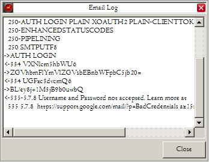
Fig. 21b The Preferences Panel Showing the Connection Log Panel.
The connection log panel displays the results of any negotiation between FireCall and the remote SMTP server. It only appears for STARTTLS connections.
The log panel will display all recent attempts to connect, the latest details will be appended to the log. Remember to scroll the sesssion to the end to display the most recent connection or simply CLEAR it at any time.
Background: In Windows we have at our disposal a technology from Microsoft called CDO, Firecall uses this to make the email point-to-point connection. Microsoft have failed to update CDO for a while so STARTTLS is not supported by default. In order to make STARTTLS function we have a proxy on port 10025 that takes any STARTTLS connection and manually injects the STARTTLS command into the stream just at the right time, for correct negotiation of a secure connection. Our proxy forwards on the connection to the user's chosen port. This is the only way to make CDO negotiate a STARTTLS connection. The process works (emails sent correctly) and has been tested on several SMTP account types, the results listed below:
Test results
HotmailHotmail's SMTP servers have been successfully tested on port 25 with SSL/TLS and base 64 authentication.
It has been tested successfully in STARTTLS mode on ports 25 and 587 and base 64 authentication.
Gmail
Gmail's SMTP servers have been successfully tested on port 465 with SSL/TLS and base 64 authentication.
It has also been tested successfully in STARTTLS mode on ports 25 and 587 and base 64 authentication.
For weither of the above to be used, the option: "allow insecure apps" had to be enabled in google's own dashboard. The Google dashboard initially recognises any new connections as being trustworthy. You have to accept each of these accesses as belonging to you and reste them to not being suspicious. This guide cannot help you further with Google dashboard functionality. It is a pain in the neck to configure and test.
Gmail is expected to introduce compulsory OAuth authentication soon and from that point onward you will not be able to use Gmail's servers in conjunction with this program.
Pipex / Talk Talk
Pipex and Talk Talk's SMTP servers specifically require both 587 and STARTTLS with base 64 authentication. It has been tested successfully in STARTTLS mode.
Outlook
Microsoft's SMTP servers require STARTTLS. It has been tested successfully with STARTTLS on either port 25 or 587 with base 64 authentication. .
Yahoo
FCW email will not work with a Yahoo SMTP server. Yahoo's SMTP servers require "app authentication" which cannot be disabled to allow normal TLS handshaking. The result being that a connection cannot be made to Yahoo's SMTP servers.
-oOo-
I did tell you email isn't easy... Do enjoy testing but please don't complain to me if it does not work. I will suggest that 100% of failures will be due to either the misconfiguration of your account details, the email provider's dashboard or the addition of extra authentication procedures that this program is unaware of. We have tried to test it all to exhaustion but there is a limit.
The Emojis Panel
The emojis panel allows you to configure the emoji sets to be used in this program.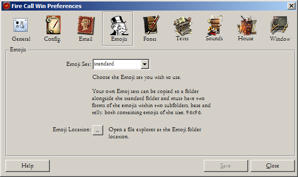
Fig. 21c The Preferences Panel Showing the Email Tab.
Your own Emoji sets can be copied to a folder alongside the standard folder and must have two forms of the emojis within two subfolders, base and telly, both containing emojis of the size, 96x96 pixels. Use the existing sets as a guide.
The Fonts Panel
The fonts panel allows you to configure the fonts used in the chat panels and the preferences utility itself. I like to be able to configure the look and feel of my applications and FCW allows some limited customisation as shown below.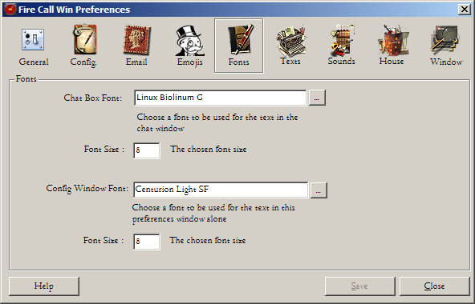
Fig. 21d The Preferences Panel Showing the Fonts Tab.
Chat Box Font
Choose a font to be used for the text in the main chat window. We suggest Linux Biolinum G at 8pt - which you will find bundled in the FCW program folder should you want to install it yourself.
Config. Window Font
Choose a font to be used for the text in this preferences window alone. We suggest Centurion Light SF at 8pt - which you will find in the FCW program folder.
The Texts Panel
The texts panel is where you can configure the pre-programmed messages that FCW can send using the buttons at the bottom of the utility. This panel allows you to change or add to the pre-defined texts that appear on the buttons.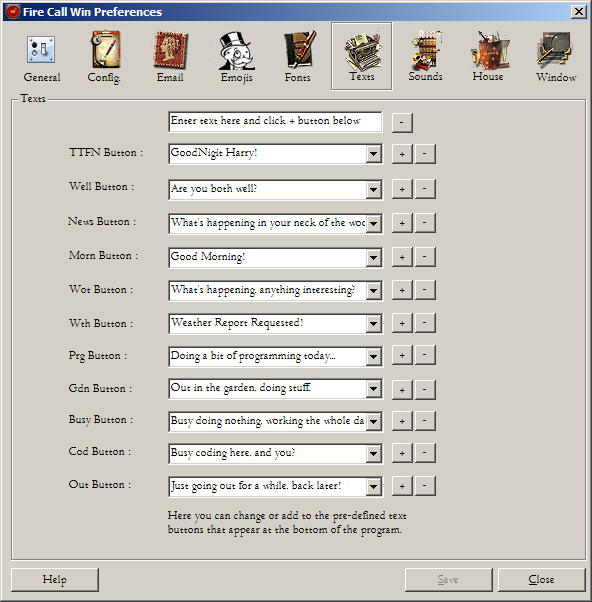
Fig. 24 The Preferences Panel Showing the Texts Tab.
Enter your custom text in the text field at the top and click the "+" button below on the pre-defined button of your choice. Your text will be added to the drop down list for that button. Click save afterwards to save your changes.
FCW will store up to 10 of your custom texts for each pre-defined button. When you press one of the pre-defined buttons on the main program window, one of the texts will be selected at random.
The "-" button next to the "+" button will delete the currently selected text.
The Sound Panel
The sound panel allows you to configure the sounds that occur within FCW. Some of the animations have associated sounds, you can control these here.
Fig. 25a The Preferences Panel Showing the Sounds Tab.
Alarm Sound
The alarm dropdown will display any .WAV files the program finds in the sounds folder. You can add you own. Press the small "sounds location" button below and a file explorer window will open at the correct folder, the folder labelled SOUNDS in the RESOURCES folder. If you copy your WAV file into this location the utility will find them after a program restart.The small button marked with a green arrow will allow to hear any additional sounds that you have added prior to selection.
The small button marked with a red cross will mute any sounds you are currently testing.
Enable Sounds for the Animations
There are various animations that have an associated sound when they operate. You can disable these entirely hereEnable loud volume
There are various animations that have an associated sound when they operate. You can reduce the volume of those sounds so they have much less of an impact.Sounds Location
The Sounds Location button will open the file explorer window in the folder that stores the applications default sounds. Do not delete those sounds. You may add your own. FCW handles .wav files by default.Recording
The recording device drop-down shows you the recording devices your machine is equipped with. Select the device upon which you wish to record messages.Quality
The recording quality ranges from s high quality 44100khz in stereo to a low quality 5512 khz in mono. The quality will significantly affect the size of the wav files created by recording messages. If you record a lot of messages and only have a small amount of free space on your shared network drive then the lowest quality is the best option to select.The Housekeeping Panel
The housekeeping panel is where you can configure backups and the archiving of old data.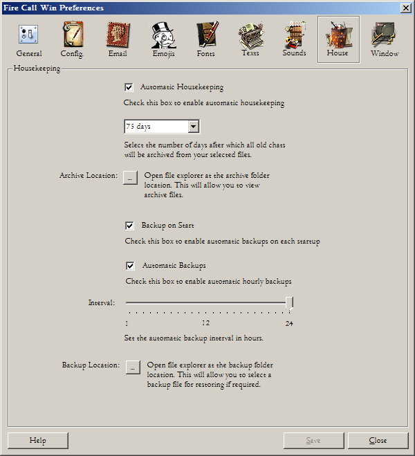
Fig. 25b The Preferences Panel Showing the HouseKeeping Tab.
This panel controls housekeeping, ie. the backup and archiving of data.
Automatic Housekeeping
Tick this box to enable automatic housekeeping. This will periodically trim the oldest data from your output file.Day Selection Drop Down
Use the drop down to select the number of days after which all your old chats will be archived from your output.Archive Location
If you click the Archive Location button, a file explorer window will open at that folder and you will see all the archive files listed. Each file has a timestamp preppended to the filename. Each will contain a portion of your old chats archived from the point when the last archive run occurred.The Archive location can be amended by modifying the FCW settings.ini file manually that exists in this location: C:\Users\<username>\AppData\Roaming\FireCallWin\settings.ini.
Look for the FCWArchiveFolder variable name and change that to a folder that exists and is accessible.
Backup on Start
FCW will take a backup of your output file every time FCW is restarted. Uncheck to disable.Automatic Backups
FCW will take a backup of your output file on a regular interval. Uncheck to disable.Backup Interval
Adjust the slider to suit the frequency of your backup needs. The slider is graduated in hours.Backup Location
FCW takes a backup copy each time it restarts, it makes a backup of the local copy of your output text file and stores that backup in the backup folder which is located here:C:\program files(x86)\FireCallWin\backup
The backup location can be amended by modifying the FCW settings.ini file manually that exists here: in C:\Users\<username>\AppData\Roaming\FireCallWin\settings.ini.
Look for the FCWBackupFolder variable name and change that to a folder that exists and is accessible.
If you click the Backup Location button, a file explorer window will open at that folder and you will see all the backup files listed. Each file has a numerical suffix of .1, .2, .3 &c appended to the filename. This indicates a version which is incremented each time a backup occurs. The higher numbered versions are the most recent. Look after these files, these are your backups and you may need to restore one of them if you ever encounter a data corruption of some sort. Also, be aware that the number of files in this folder can grow quite quickly and so you may need to trim the older version files from time to time.
The Window Panel
The window panel brings compatible features carried over from the Yahoo Widget (javascript) version of this program.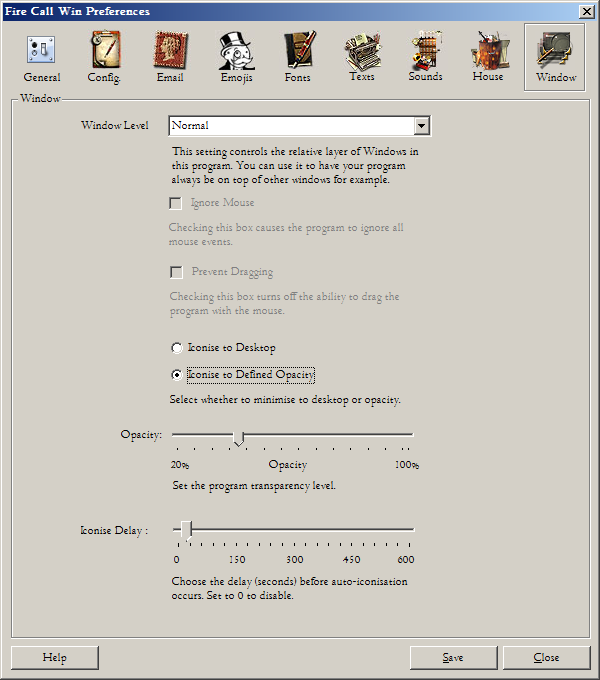
Fig. 25c The Preferences Panel Showing the Window Tab.
Window Level
The Window Level is the position of your program window in the z axis. Setting it to keep below all other windows means that it will drop to the bottom and stay there. Windows will always bring any window that is in focus to the top but the program will also be trying to keep itself at the bottom, so that whilst you are working on the window it will tend to jump forward and back again. If you choose this option do realise its limitations. It is here as more of an experiment as to how to implement a feature, one carried over from the Yahoo Widget (javascript) version of this programIgnore Mouse
This option is currently disabled in this program.Prevent Dragging
This option is currently disabled in this program.Iconise to Desktop
If the Iconise to Desktop option is chosen this will cause the application to iconise to a stamp icon on the desktop.Iconise to Defined Opacity
If the Iconise to Defined Opacity option is chosen this will enable the fade out of the program to a pre-defined level of opacityOpacity
The opacity slider defines the level of opacity that the application will fade to.Iconise Delay
The application will iconise after this period of delay. It will fade or iconise to desktop according to the iconise options chosen above.-oOo-
Save button
The Save button on the preferences utility causes all the changes you have just made to be saved to a configuration file and the new values are passed to the program to change the way it operates.Close button
The Close button on the preferences utility closes the preference windows but does NOT cause all your recent changes to be abandoned. It is not a cancel button.-oOo-
Leaving the preferences behind we return back to the main program.
Fire Call Button.
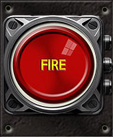Fig. 26 The Fire Call Button.
This big red button, if kept pressed for 5 seconds will buzz your chat partner to get his attention. You will also hear the buzzer sound at your end to confirm the operation.
The Buzzer Lamp
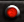Fig. 27 The Buzzer Lamp Bright
Just above the Clock or the Fire Call button is the buzzer lamp. If your chat chat partner has buzzed you during your absence meaning that you did not hear the buzz, the buzz light will stay lit.

Fig. 28 The Buzzer Lamp Dull
A click on the buzz lamp will extinguish the lamp to its dull state.
Clock Activator Screw
Pressing the top left screw on the Fire Call button will cause the button to flip to the real-time clock display as shown below.Fig. 29 The Clock Activator Screw.
A further press on the screw will revert back to the fire call button, ready to buzz!
Fig. 30 The Real-Time Clock.
The Real-Time Clock.
A right click on the Real-Time Clock displays a right click menu where you can select the method of displaying the clock. The GDI+ method does not yet function as it has not been implemented.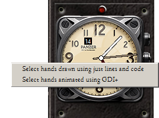
Fig. 31 The Real-Time Clock showing right click menu
Fig. 32 The Iconise Button
This button replaces the standard Window's minimise button but instead causes the program to fade to nothing. The program window then fades away and is replaced by an icon that sits on the desktop. You can place that icon anywhere you like on the desktop and it will remember its position when the program is next restarted.
Fig. 33 The Program's Iconised state
In order to give you warning of new incoming messages, this icon will pulsate when a new text is incoming. Double-click on the icon to maximise the program.
The Close Button
It has the same functionality as clicking the close button, bottom right.Fig. 34 The Close Button
The Ping Button
Causes a 'ping' to be sent to the other user. This will elicit a ping response from your chat partner's client app as long as it is running.
Fig. 35 The Ping Button
The Right Click Menu.
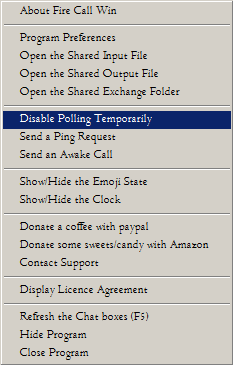Fig. 36 The Right Click Menu.
The right click menu has a few options that are also available through buttons on the main program. They are here for convenience. Certain items are unique to the menu. The menu appears when you right click on any part of the program except for the chatboxes and the clock. The two chat boxes will show a different right click menu as well as the clock, described earlier. The preferences window also has a right click menu that is a subset of the one above.
About Fire Call Win
The "About Fire Call Win" option displays program information and the current version number.Open shared input or output files
The option to open shared input or output files will open the files specified in the default application, this will probably be notepad on most systems.Open shared exchange folder
The option to open the shared exchange folder will open the File Explorer at your specified location.Disable Polling Temporarily
The option to disable polling is there so that you can mute your chat partner's messages until you wish to re-enable polling again.Send a Ping Request
Causes a 'ping' to be sent to the other user.Send an Awake Request
Causes an awake request to be sent to the other user's application, that should elicit an awake response shortly after.Show/Hide the Emoji State
Causes the Emoji control panel lid to be removed and the control panel to reappear.Show/Hide the Clock
This is a toggle that switches between the clock and the big red shiny buzzer button.Donate a coffee with Paypal
We love a coffee. Opens a browser window to make a donation to us via Paypal.Donate some sweets via Amazon
We love sweets, especailly licquorice. Opens a browser window to allow you to make a gift via Amazon wish list.Contact Support
This will open a link to somewhere that you can ask for support. Not yet determined where....Display Licence Agreement
The "Display Licence Agreement" is an important option that you do need to review, this is the licence by which you use this software.Refresh the chat boxes
The option to refresh the chat boxes will cause the program to repoll for fresh data immediately and the two windows to refresh.Hide Program
Iconises the program to the stamp icon.Close Program
Closes the application completely.The Emoji Panel Cover
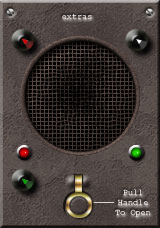Fig. 37 The Speaker Panel & Emoji Panel Cover
The speaker cover has three buttons, one to record speech, one to play speech and the other to halt any current action. The small red lamp on the speaker panel will light up brightly when recording a message for your chat partner. The maximum length is 65 seconds. Be aware that if you utilise this facility a lot you will fill up your dropbox allocation rather quickly! Best to be brief with your messages and use this function infrequently... When you have selected a recording to play, the green button will appear. When you are playing a recording the lamp will light up brightly but will change from bright green to dull when it has finished. You cannot record whilst an existing recording is playing.
Click on pull catch to remove the cover and display the Emoji Panel below.
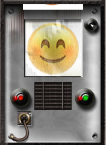
Fig. 39 The Emoji Control Panel
The Emoji Control Panel shows your current emoji state on the television screen and your chat partner's emoji state is available via print-out. When your chat partner's Emoji status is changed it will display his Emoji through the use of a print out animation. Clicking on the strip of paper (just appearing at the top of the Emoji Window) will allow you to see your chat partner's current Emoji state. A small animation will run when the paper is first clicked upon. Another click on the displayed print out will shred it.
The left and right hand button allow you to select other emojis for viewing on the telly screen. As you select each Emoji, the Emoji drop-down at the top of the program will change as well.
Clicking on the speaker grille will toggle the sound partial mute for the whole application, changing them from loud to quiet and back again as required.
The final control in the emoji panel is the button top right that will close any displayed image.
Displaying your partner's attached images.
When your chat partner sends you an image or other attachment, it will appear in a picture box in the emoji control panel. If the file is a known image then it will display the image itself. If it is a 'known' image format but Windows cannot easily display it then an appropriate icon will appear in its stead. The program will attempt to display the following image types - ".jpg,.jpeg,.bmp,.ico,.png,.tif,.tiff,.gif,.cur,.wmf,.emf".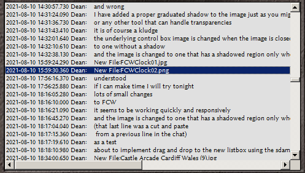
Fig. 40 Example chat partner's Chat Window Selecting a PNG file.
When your chat partner sends you a valid file attachment then you can simply open that file using a double-click on the link itself or by doucle clicking upon the icon in the picture box.
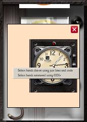
Fig. 41 Example picture box displaying an attached PNG file.
Those attachments that it cannot display (due to limitations in the program or in the o/s itself) are what we refer to as valid but unknown image types. For example: .pict,.icns,.svg,.NEF,.CR2,.ORF,.RW2,.ARW,.DNG,.wps,.AI,.PSD,.RAW,.INDD, HEIC, HEIF &c. Each of these files will cause an icon to be displayed (below) that indicates this status. If the underlying o/s (XP, Win 7. 8, 10 or 11) understands and handles the file type then you may still be able to double click on the icon and Windows may then open it. Note that some of these file types might require a plugin for Windows to open them in this fashion, for example, .HEIC images require a 3rd party plugin to display image-container type files under Windows 7.
Fig. 42 Unknown Image Type Encountered Icon
If an attachment is valid and known, in this case the correct file type icon will be displayed. For example, if you have been sent an attachment then it will have an appropriate icon displayed that indicates the file type according to the file suffix.
The program has a bundle of appropriate but not exhaustive file type images. The program will select one of each using the file suffix.
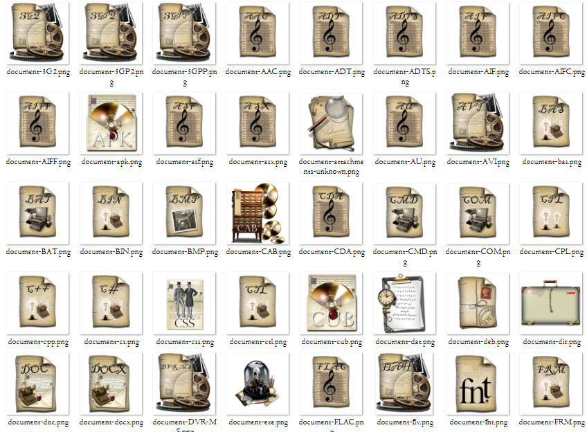
Fig. 43 Examples of Other Attachment Icons
A double click on any of the above icons and it will open automatically in the default application, if one is set.
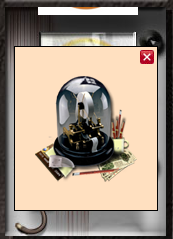
Fig. 44 Example Attachment of a program file of type EXE
A double click on the icon picture box will open the attachment using the default application. In the above case Windows will open the attached EXE file and run it (with a warning), so please take care! If an audio file is selected Windows media player will open and play the WAV file. What happens is basically down to your Windows configuration and the default application types selected by the user. If the file type is completely unknown then the following icon will be displayed in its stead.
Fig.45 Unknown Attachment Encountered Icon
If an attachment has expired, ie. the shared image has been deleted from the shared area then a click upon an old image referenced in the chat window, will fail. It will no longer show an image or attachment type as the file has disappeared, as far as the program is concerned. In this case the following image icon will be shown.

Fig. 46 File Not Found Image
Clicking on a valid URL
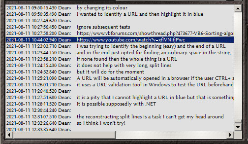Fig. 47 Selecting and Opening a URL
When your chat partner sends you a valid URL then you can open that using a double-click on the link itself. It will open automatically in the default browser.
Settings:
All the above configuration options are stored in one place, within a settings.ini file in this location typically:C:\users\<username>\appdata\roaming\firecallwin\
eg. C:\users\beededea\appdata\roaming\firecallwin\settings.ini
The settings file is a text file and it is not recommended to edit it by yourself in notepad or similar, if you have to then it might be wise to take a copy before doing so.
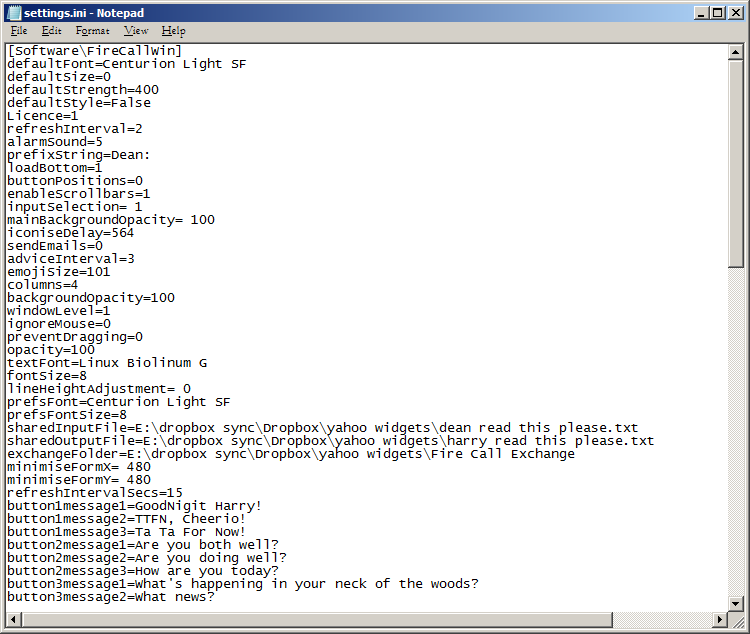
Fig. 48 The Settings.ini File opened in Notepad.
Error Codes:
During the operation of the FCW some error messages may pop up, one or two are normal and expected, on first startup for instance, you may receive messages about the input and output files not yet being selected. Other than these normal messages, errors should not appear. IF they do then the important errors should have an explanation listed below. Please report errors back to the developer.%Err-I-ErrorNumber 01 - The Shared Input File you have set is not accessible.
01 This error indicates that you have not set a correct path to the input file or the path/file you have chosen no longer exists for an unknown reason.
%Err-I-ErrorNumber 02 - The Shared Output File you have set is not accessible.
02 This error indicates that you have not set a correct path to the output file or the path/file you have chosen no longer exists for an unknown reason.
%Err-I-ErrorNumber 03 - The Exchange Folder you have set is not accessible.
03 This error indicates that you have not set a correct path to the exchange folder or it no longer exists for an unknown reason.
%Err-I-ErrorNumber 04 - Both input and output files are the same file in the same location. Attach failed.
04 This error indicates that you have tried to attach the same file to and from the exchange folder. This can occur if you open an Explorer window open whose folder is the same as that set in the exchange folder field in the configuration.
%Err-I-ErrorNumber 05 - Sorry, can only accept one icon drop at a time, you have dropped x.
05 This error means that you have used the attach button to select more than one file. The attach button is not designed to do this. If you really want to send multiple files to your partner then do so in the usual manner by dragging files directly from an explorer window to the chat window.
%Err-I-ErrorNumber 06 - Both the input and output folders are the same, you are copying from and to the same location. Drag & drop failed.
06 This error indicates that you have tried to drag the same folder to and from the exchange folder. This can occur if you have an Explorer window open whose folder is the same as that set in the exchange folder field in the configuration. If you drag a folder within that location and drop it onto FCW then this error will display. Basically, don't do it.
%Err-I-ErrorNumber 07 - Both input and output files are the same file in the same location. Drag & drop failed.
07 This error indicates that you have tried to drag the same file to and from the exchange folder. This can occur if you have an Explorer window open whose folder is the same as that set in the exchange folder field in the configuration. Basically, don't do it.
%Err-I-ErrorNumber 08 - For some reason that filename is invalid, possibly containing disallowed chars. Drag & drop failed.
08 This error indicates that you have tried to drag a file whose name contains a character that FCW and Windows cannot handle. Try and rename the file before dragging it and sending it to your partner.
%Err-I-ErrorNumber 09 - The file you dragged to the program seems to be unavailable now. Drag & drop failed.
This error indicates that another process (or user) has done something dodgy with this file, possibly deleting it or somehow causing it to become missing...
%Err-I-ErrorNumber 10 - File not found, if a recent attachment, Dropbox is possibly still transferring." & vbCrLf
This error may indicate that the file your partner has dropped does not yet exist on the shared folder. If a file is particularly large, or your network is slow then Dropbox may not have yet managed to transfer it. Wait for a while for Dropbox to complete the transfer.
%Err-I-ErrorNumber 11 - The help file - FireCallWin Help.html - is missing from the help folder.
This error indicates that FCW has been installed incorrectly or someone has been deleting/moving files. Perhaps re-install.
%Err-I-ErrorNumber 12 - FCW was unable to access the shared output file. " & vbCrLf & FCWSharedOutputFile & vbCrLf & " with " & dropboxErrCnt & " attempts
This error indicates that FCW cannot find the file that you have specified as your output file. This could be because the file has been deleted,but more likely it is because the location in the configuration is incorrect.
%Err-I-ErrorNumber 13 - FCW was unable to access the shared input file. " & vbCrLf & FCWSharedInputFile & vbCrLf & " with " & dropboxErrCnt & " attempts
This error indicates that FCW cannot find the file that you have specified as your partner's input file. This could be because the file has been deleted,but more likely it is because the location in the configuration is incorrect.
%Err-I-ErrorNumber 14 - Sharing is not currently active. Outgoing messages will be saved but will not progress further.
This error indicates that Dropbox or the provider of the chosen network share us not running. If you are using Dropbox then perhaps restart Dropbox.
%Err-I-ErrorNumber 15 - The output file is close to the maximum limit, please split and shorten the output file"
This error indicates that the file you have chosen as the output file contains close to 32,768 lines. FCW is currently incapable of exceeding that many lines in a single listbox. Suggestion here would be to perform some housekeeping and remove some of the older lines and archiving them.
%Err-I-ErrorNumber 16 - The output file is too long at 32,766 lines long, please split and shorten the output file. FCW will not process new messages."
This error indicates that the file you have chosen as the output file contains close to 32,768 lines. FCW is currently incapable of exceeding that many lines in a single listbox. Suggestion here would be to perform some housekeeping and remove some of the older lines and archiving them.
%Err-I-ErrorNumber 17 - The combined chat box is close to the maximum limit of lines of text, please split and shorten the input/output files or select the two chatbox option"
This error indicates that the two files you have chosen as the input and output file contain together close to 32,768 lines. FCW is currently incapable of exceeding that many lines in a single combined listbox. Suggestion here would be to perform some housekeeping and remove some of the older lines and archiving them.
%Err-I-ErrorNumber 18 - The combined chat box is too long at 32,766 lines long, please split and shorten the input/output files or select the two chatbox option. FCW will not process new messages."
This error indicates that the two files you have chosen as the input and output file contain together close to 32,768 lines. FCW is currently incapable of exceeding that many lines in a single combined listbox. Suggestion here would be to perform some housekeeping and remove some of the older lines and archiving them.
%Err-I-ErrorNumber 19 - The input file is close to the maximum limit, please split and shorten the input file"
This error indicates that the file you have chosen as the input file contains close to 32,768 lines. FCW is currently incapable of exceeding that many lines in a single listbox. Suggestion here would be to perform some housekeeping and remove some of the older lines and archiving them.
%Err-I-ErrorNumber 20 - The input file is too long at 32,766 lines long, please split and shorten the input file. FCW will not process new messages"
This error indicates that the file you have chosen as the input file contains close to 32,768 lines. FCW is currently incapable of exceeding that many lines in a single listbox. Suggestion here would be to perform some housekeeping and remove some of the older lines and archiving them.
%Err-I-ErrorNumber 21 - The polling timer is not active, the prefs are set to No Timed Refresh" & vbCrLf & "Increase value if you want it to poll for new data,"
This error indicates that you have disabled the polling timer. FCW will not update until the timer is re-enabled.
%Err-I-ErrorNumber 22 - No Audio Devices Found, the recording message functionality will be disabled."
This error indicates that FCW has not found any audio devices able to record audio messages. Recording functionality will be disabled.
%Err-I-ErrorNumber 23 - ADO Error number 3004, a File Write Error. Dropbox synch. error (backlog). Your internet connection is either very slow or Dropbox is struggling to synchronise."
This error indicates that the transport mechanism, in this case the connection between the local dropbox client software and the remote server is becoming "bunged up". FCW writes to a file that is shared by Dropbox over DB's own network. If Dropbox is acting slowly or locking a file during an update this message may appear. A slow internet or synching some large files may cause this situation. What can you do to alleviate this, kick the kids off the internet, turn off all your streaming televisions, and all the other pointless devices that consume bandwidth, restart Dropbox or switch broadband providers, the choice is yours. You could always move to the city.
%Err-I-ErrorNumber 24 - No valid timestamp generated.
This message only occurred once during testing and I could find no reason for it. There is no mitigation offered for an error that may never be displayed again. Regardless, for this and any other error message displayed by the program, please report it. Every function in the program has an error trap and it will be useful to know what errors have occurred so I can improve the program,
Technology:
The utility was created using VB6, a language that was once
Microsoft's vaunted flagship
language. It was built upon Windows 7, Microsoft's last good desktop
operating system, I also used vBAdvance, MZ-TOOLS 3.0, CodeHelp Core
IDE Extender
Framework
2.2 & Rubberduck 2.4.1. I used VB6 to prove it can be done and also to reacquaint
myself
with the technology. The utility will be migrated to
VB.NET
so eventually there will be a version that is both future-proof and
64bit.
Credits:
This
program was built with the assistance of various snippets or chunks of
FOSS code. VB6 has been around for so long that the
extant codebase
is
immense. You can always find snippets to do this or that and it makes
your development task immeasurably easier.
- Shuja Ali (codeguru.com) for his settings.ini code.
- Registry reading code from ALLAPI.COM.
- Rxbagain on codeguru for his Open File common dialog code without a dependent OCX
- si_the_geek for his special folder code
- Aaron Young for his code for registering a keypress system wide
- La Volpe for the code to allow VB6 to read non-native image types
- Krool for his slider OCX
- Chris Fannin, code for copying a folder
- Austin Hickl function GetDateInUniversalFormat
- Ellis Dee quicksort function
- KayJay IsGoodURL function
- Jcis resizing an image
- Elroy's superb balloon Tooltips.
- Wqweto's superb TLS/STARTTLS code to enable email from VB6 using STARTTLS.
- theTrick's superb sound code allowing recording of high quality sound.
- Keith Lacelle for the alternative FSO code to read a value from an INI file when GetPrivateProfileString fails.
- Olaf Schmidt and his Date to Epoch code
Donations:
Bonkers people like myself create these tools and we do it for nothing, for free, gratis. However, it makes my day when someone sends a gift, a treat or a present and it inspires me to do more. In all the time that I have created all these tools (thirty or more tools) I have received no more than a dozen or so gifts but when someone has done so I feel like I have just inherited a new friend. All I ask is that if you use this tool and continue to do so, consider sending me something small once every few years. I have a penchant for licorice and cheap SSDs, the former is cheap and brings a smile to my face, the latter has me running round the room in circles.Copyright ©2021 Dean Beedell
This program is free software; you can redistribute it and/or modify it under the terms of the GNU General Public Licence as published by the Free Software Foundation; either version 2 of the Licence, or (at your option) any later version. This program is distributed in the hope that it will be useful, but WITHOUT ANY WARRANTY; without even the implied warranty of MERCHANTABILITY or FITNESS FOR A PARTICULAR PURPOSE. See the GNU General Public Licence for more details. You should have received a copy of the GNU General Public Licence along with this program; if not, write to the Free Software Foundation, Inc., 51 Franklin St, Fifth Floor, Boston, MA 02110-1301 USA
END
Fig. 49 Fire Call for Windows shown on my desktop.